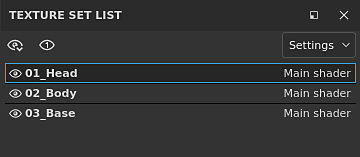
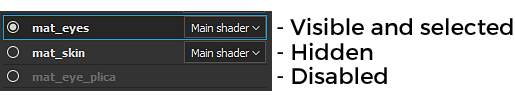
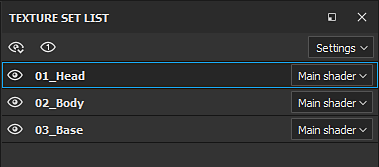
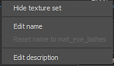
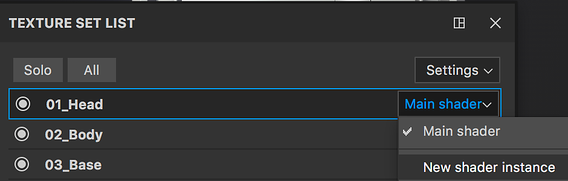

Icon

The Texture Set List window shows all the material IDs from the current 3D model in a project. It allows to switch and see the layer stack associated with each material on the model as well as their dedicated settings.
The main goal of the Texture Set List window is to allow to switch from one material to one another to access the layer stack associated with each material.
In case of the Material Layering workflow, the sub-stacks are displayed below the Texture Set name.
Texture Sets can have multiple states :


The display of a Texture Set can be manager by the dedicated icons:
|
Icon |
Action |
Description |
|---|---|---|
|
|
Open Menu |
Open a new menu with the following actions:
|
|
|
Focus Mode |
Isolate the currently active Texture Set and hide all the other while this mode is active. Click again on this button to exit the mode. |
|
|
Visibility |
Click on this button next to a Texture Set to hide or make visible a Texture Set in the viewport. |

When right-clicking on a Texture Set name, it opens a contextual menu with the following actions :
The button at the right of each Texture Set name can be used to manage the shader assignment.
By default each texture set share the same shader instance. However it can be convenient sometimes to have a different shader only for a specific part of the mesh. This can be done by clicking on the button and choosing "New shader instance". From there, in the Shader settings window it is possible to change the shader and its parameters without affecting other Texture Sets.

The settings button open a new menu that expose multiple actions :